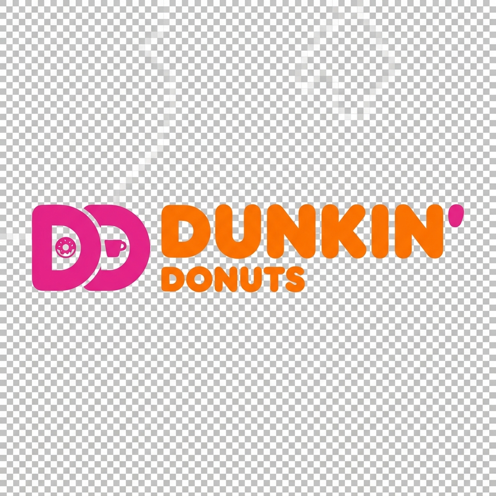

Dunkin' Calories &
Nutrition Calculator
Our Dunkin' calorie calculator makes it easy to track coffee drinks, donuts, bagels, and breakfast wraps. Adjust sizes and milk choices in real-time to stay aligned with your daily nutrition and fitness goals.
Build your order

Results are estimates based on common US menu nutrition data. Location recipes and portions may vary.
Dunkin' Nutrition & Macro Tracking Guide
America runs on Dunkin', but if you aren't paying attention, your morning coffee run can easily consume half your daily calories. Sugary swirls, whole milk, and dense donuts can turn a quick breakfast into a macro disaster. Our independent Dunkin' calorie calculator helps you navigate the menu safely, allowing you to build your coffee and breakfast exactly the way you want it. If you need a later breakfast or lunch, track your calories using our Starbucks Calorie Calculator or our Panera Bread Nutrition Calculator.
How to Use the Dunkin' Calorie Calculator
Dunkin' has hundreds of flavor combinations. Here is how to keep them in check:
- Start with the Base: Whether you want hot coffee, iced coffee, or a Cold Brew, select your foundational drink first.
- Adjust Your Size: Remember that Dunkin's iced cups are larger than their hot cups (a Medium iced is 24oz vs a Medium hot at 14oz).
- Choose Milks & Flavors: Toggle between skim, whole, almond, and oat milk to see exactly how your macros shift.
Popular Dunkin' Orders & Their Macros
Curious how your favorite breakfast stacks up? Here is the estimated nutritional breakdown for a few classic Dunkin' items (Medium sizes for drinks, standard builds).
| Menu Item | Calories | Protein | Carbs | Fat |
|---|---|---|---|---|
| Iced Coffee with Caramel Swirl & Cream | 260 | 4g | 38g | 10g |
| Cold Brew with Sweet Cold Foam | 80 | 1g | 12g | 3g |
| Bacon, Egg & Cheese Croissant | 520 | 19g | 41g | 31g |
| Sausage, Egg & Cheese (English Muffin) | 530 | 21g | 38g | 33g |
| Glazed Donut | 240 | 4g | 33g | 11g |
Making Healthy Choices at Dunkin'
You do not have to skip the drive-thru to stay healthy. Use these strategies:
Flavor Shots vs. Flavor Swirls
This is the most critical rule at Dunkin'. "Swirls" (like Caramel or Mocha) are sweetened syrups that add roughly 150-170 calories per medium drink. "Shots" (like French Vanilla or Toasted Almond) are unsweetened flavor extracts that add zero calories and zero sugar. Always ask for shots if you are dieting.
Switch the Bread
If you love the breakfast sandwiches, ordering them on an English Muffin or Wake-Up Wrap instead of a Croissant or Bagel saves hundreds of calories and significant amounts of saturated fat.
Embrace Cold Brew
Black cold brew is naturally sweeter and smoother than traditional iced coffee, making it much easier to drink without adding heavy creams or liquid sugars. A medium black cold brew is only 15 calories.
Frequently Asked Questions (FAQs)
What is the lowest-calorie breakfast sandwich at Dunkin'?
The Egg & Cheese Wake-Up Wrap is only 150 calories and provides 7g of protein, making it a fantastic light breakfast or snack.
Are Dunkin' flavor shots actually zero calories?
Yes, the unsweetened flavor shots (Vanilla, Hazelnut, Toasted Almond, Blueberry, Raspberry, and Coconut) contain zero calories and zero sugar.
How many calories are in a Dunkin' Glazed Donut?
A standard Glazed Donut contains 240 calories, 11g of fat, and 13g of sugar. It is actually one of the lower-calorie donuts compared to the frosted or jelly-filled options.
Is Almond Milk or Oat Milk better for calories at Dunkin'?
Almond milk is the winner for low calories. Dunkin's almond milk adds about 80 calories to a medium iced coffee, while their oat milk adds roughly 130 calories.
What is the healthiest hot coffee order?
A Hot Coffee with skim milk and a French Vanilla flavor shot is less than 30 calories and provides a creamy, flavorful experience without the sugar crash.
Are Dunkin' Refreshers healthy?
While they sound healthy, Dunkin' Refreshers are made with a fruit concentrate that is high in sugar. A medium Strawberry Dragonfruit Refresher contains 130 calories and 27g of sugar.
Can I track macros accurately here?
Drink macros are highly accurate based on standard pumps and pours. However, variations happen based on who is pouring the cream, so allow for a small margin of error.
Sweet mornings.
Smart decisions.
This Dunkin' calorie calculator makes it easy to balance your morning routine. Select sizes and check how oat milk or skim milk changes the total nutritional profile of your favorite coffee beverage.
Ingredients and portion sizes can vary by location. For medical diet restrictions or exact allergen information, consult Dunkin' official nutrition platforms.
Dunkin'
questions.
How much difference does milk choice make?+
Swapping whole milk for skim milk or oat milk in a medium latte can save anywhere from 20 to 50 calories, while slightly altering macros.
Does this include sugar-free flavor shots?+
Standard calculations assume the default recipes. Added flavor swirls (sweetened) will add extra calories, while flavor shots (unsweetened) add minimal calories.
Is this an official Dunkin' tool?+
No. NutriRoute is independent and is not affiliated with Dunkin'. This page is for information only.